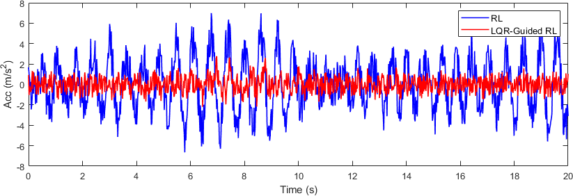
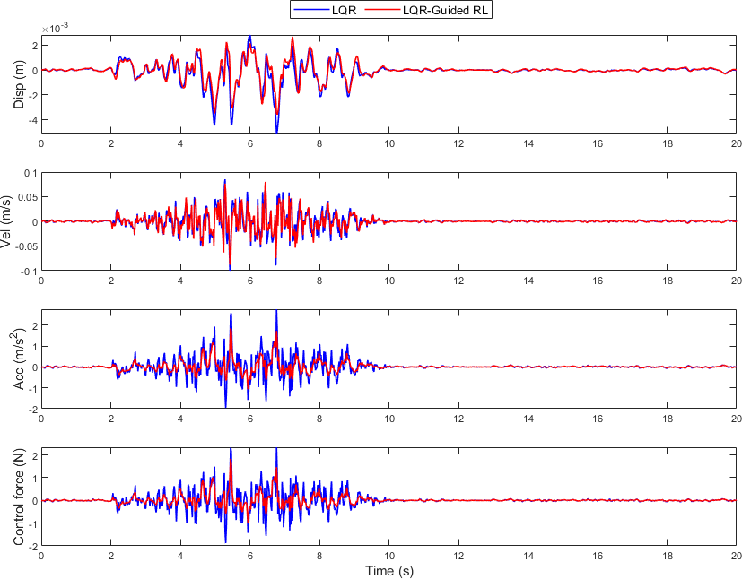

Performance of LQR-Guided RL
A LQR is designed based on assumed linear dynamical system whose parameters value are chosen arbitrary.
This designed LQR is used to Guide the RL during its training and testing phase on a true system. The assumed system and true system (nonlinear)
considered are as below:
$$\text{Assumed system}\hspace{2em}1.6\ddot{x} - 0.5\dot{x} + 181x = u - 1.6\ddot{x}_{g}$$
$$ \text{True system}\hspace{3em}\ddot{x} + 0.4\dot{x} + 100x + x^3= u - \ddot{x}^g$$
where $x,u,\ddot{x}^g$ are the displacement, control force and ground acceleration respectively.
Training phase
To assess the effectiveness of the proposed approach, the acceleration response
of the dynamical system during the training phase is compared between the LQR-guided
reinforcement learning (RL) policy and the non-guided RL policy. As shown in
Figure
[2], the incorporation of the LQR prior leads
to a significantly reduced acceleration response relative to the non-guided RL policy.

Figure 2: Comparison of acceleration response during training of RL controller and LQR-Guided RL controller
Testing phase
The LQR-guided RL policy and the standalone LQR policy are tested on the true
nonlinear system. As illustrated in Figure
[3], the
LQR-guided RL policy exhibits lower acceleration responses and requires reduced control
effort compared to the LQR policy. These results indicate that LQR guidance improves the
safety in the training process of the RL policy, and also, the trained RL policy achieves
superior performance compared to the standalone LQR policy.

Figure 3: Comparison of displacement, velocity, acceleration response and control force during testing for the case of LQR-Guided RL and LQR